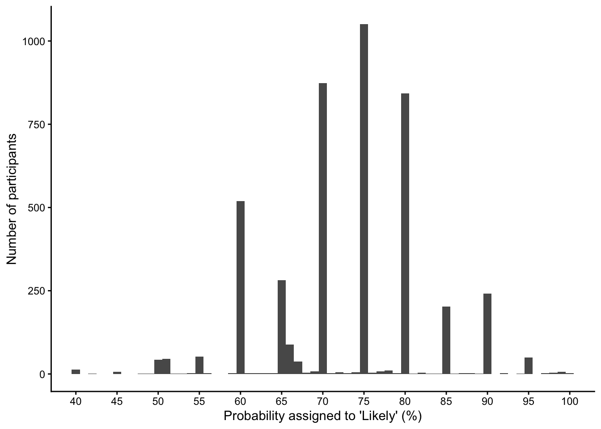
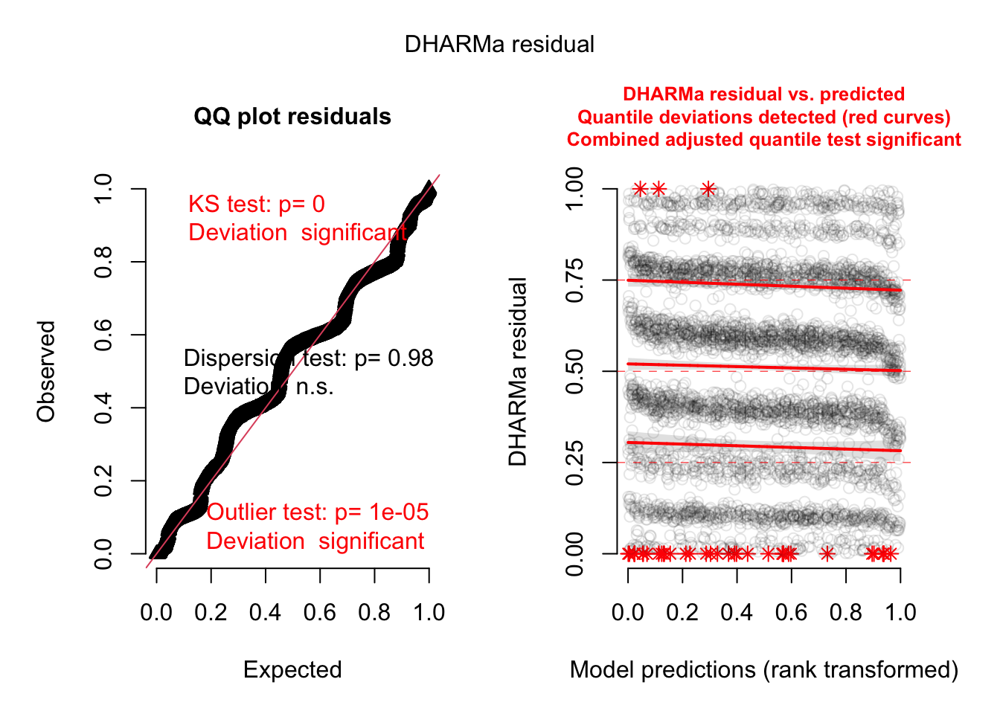
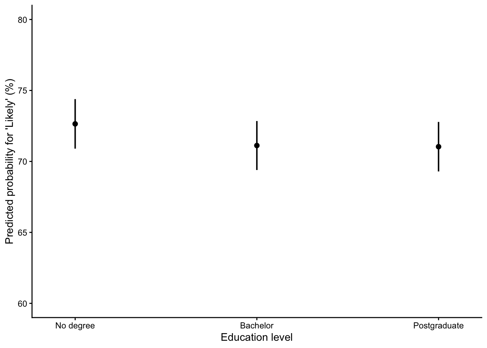

Words such as “likely”, “unlikely”, and “probable” are common in everyday language, used in settings ranging from casual predictions among friends to weather forecasts and medical advice. These terms are meant to communicate how probable an outcome is, yet because they are so familiar, speakers rarely define what they mean. It is less clear whether people share the same understanding of these terms, or whether different listeners picture different probabilities when they hear the same word, which could lead to miscommunication. This question is also relevant to psychology, where survey research often relies on Likert-type rating scales with verbal labels such as “likely” and “unlikely”. The present analysis therefore asks: Do a person’s background and the order in which they saw the phrase predict the probability they assign to “likely”?
The data came from an online quiz created by Adam Kucharski, in which participants assigned a probability from 0 to 100 to each of 19 phrases presented in a random order (Kucharski, 2026). The data were later shared through TidyTuesday, a weekly community that uploads data projects on GitHub. To address the research question, this analysis will focus only on the ratings for the term “likely,” along with the order in which participants saw it and their age, English language background, and education. Because order was randomly assigned, it was not expected to influence ratings, whereas background characteristics might plausibly shape how people interpret the term.
Both presentation order and background characteristics may shape how people interpret “likely.” Order may be especially influential, because people often judge information by comparing it with what surrounds it. For example, a product may seem expensive on its own but cheap once it is placed next to a similar product that costs twice as much. In the same way, the phrases a participant sees before “Likely” may make it seem stronger or weaker by comparison. Background characteristics may also play a role. People with different levels of education may be familiar with different ranges of vocabulary, which could affect how finely they distinguish between probability terms. Similarly, participants whose first language is not English may use these terms less often and may group “Likely” with other positive terms such as “probable”, potentially leading to higher ratings. Finally, age may matter because different generations may use these terms differently.
The data came from an online quiz created by Adam Kucharski as an independent project, and the dataset was accessed through TidyTuesday (2026-03-10 release, curated by Nicole Rennie). In the quiz, participants were shown common probability phrases, such as “likely”, “unlikely”, and “almost certain”, and asked to give the probability (from 0 to 100%) that each phrase represents. More than 5,000 individuals took part (n = 5,174), with each person rating all 19 probability phrases, shown in a random order. Participants also answered optional questions about their background, including their age, English language background, and education level. The data was collected anonymously, with each individual represented only by an ID number, so each row in the analysis represents one person.
Measures
The outcome was the probability (from 0 to 100) each person assigned to the phrase “Likely”; out of the 19 phrases, this was only the only outcome examined. Four predictor variables were used: presentation order, education, English language background, and age. Throughout the questionnaire, each participant was presented with the phrase “Likely” at random positions between 1 and 19. Due to this, we were able to test whether the phrase preceding “Likely” influenced its rating. Education, English language, and Age were grouped into a background predictor. Education was the person’s highest education level, with five categories (less than highschool, highschool, some college, bachelor’s degree, and postgraduate degree). English language background described whether English was the persons first language, with three categories (first language; not first language but fluent, not first language and not fluent_. Age was measured using eight age bands, ranging from under 18 to 75 and older.
Data Preperation and Missing Data
Several data preparation decisions were made before analysis. In the original data, each participant had a separate row for each of the 19 phrases, resulting in 19 rows per person.Since regressions assume that each row represents and independent observation, continuing with data analysis understanding this assumption would lead to incorrect results.Therefore, only the ratings for “Likely” were retained, resulting in one row per participant. To join the different predictors, participants’ background information, which was stored in a separate file, was then joined to their ratings using their ID number.
Another set of data preperation consisted of combing participant categories. Some background categories contained very few participants, which can produce unstable estimates. To avoid this, small groups were combined. For education, “less than high school”, “high school”, and “some college” were combined into “no degree”. For English language background, the two non-native groups were combined into “not first language”. For age, “under 18” and “18-24” were combined into “under 25”, and “65-74” and “75+” were combined nto “65+”. The reference groups for all models were no degree, English as a first language, and under 25.
Participants who completed the phrase ratings but skipped at least one background question were treated as missing data. In total, 694 participants (13.4%) were missing at least one background variable and were excluded, so that all models were fit to the same participants and could be compared fairly. The final sample included 4,480 participants. Extreme ratings (very high or very low) were retained because they represents genuine reponses rather than errors.
Analytical Strategy and Rationale
Table 3. Candidate models
Model
Predictors
Purpose
M0: Null
Intercept Only
Reference model
M1: + Order
Presentation Order
Used to evaluate whether the presentation of “Likely” plays a role in it’s rating
M2: + Background
Presentation Order + Education + English Background + Age
Evaluated whether the addition of background characteristics improves prediction
All analyses were conducted in R using the glmmTMB package. Linear regression models (Gaussian family with identity link) were used because the outcome was a continuous rating on a scale of 0 to 100, rather than binary or count response. However, it is important to note that the data contained both numeric and categorical data, since the outcome is based on a 0 to 100 scale, as well as presentation order (1 to 19). Alternatively, all background data is categorical. Due to this, there will be two different descritpive tables (see Table 1 and Table 2) to demonstrate the different variables.
Three nested models were fit, each building on the previous one. The null model (M0) contained no predictors and estimated only the average rating. Model 1 (M1) added presentation order, and Model 2 (M2) added education, English language background, and age. This specific sequence was chosen to test whether presentation order predicted ratings, and then whether background factors improved prediction beyond order. Presentation order was fit into the first model since it is randomly assigned among participants. The remaining background variables were added as a secondary analysis since those provide contexts to participants decision Model assumptions were assessed using simulated residuals from DHARMa package and multicollinearity was assessed using variance inflation factors (VIFs). Models were compared using likelihood-ration tests, along with the Akaike Information Criterion (AIC) and Bayesian information criterions (BIC), where lower values indicate better fit. Parameters estimated from M2 are reported with 95% confidence intervals, and statistical significance was emulated at ɑ= .05
Code
# keep only the ratings for 'likely' so each person only has one row likely <- judgements |>filter(term =="Likely")# add the background information to the each person (ID)likely_id <- likely |>left_join(respondents, by ="response_id")
Code
likely_clean <- likely_id |>mutate(#combing small sample of education groups education =case_when( education_level %in%c("Less than high school", "High school", "Some college") ~"No degree", education_level =="Bachelor"~"Bachelor", education_level =="Postgraduate"~"Postgraduate" ),#combine the two non-native english speaking groups english =case_when( english_background =="English is my first language"~"First language", english_background %in%c("English is not my first language but I am fluent","English is not my first language and I am not fluent") ~"Not first language" ), #combine the smallest age groups at each endage =case_when( age_band %in%c("Under 18", "18-24") ~"Under 25", age_band %in%c("65-74", "75+") ~"65+",TRUE~ age_band ) )
Code
#set the order of the groups, making the first group the reference grouplikely_clean <- likely_clean |>mutate(education =factor(education, levels =c("No degree", "Bachelor", "Postgraduate")),english =factor(english, levels =c("First language", "Not first language")),age =factor(age, levels =c("Under 25", "25-34", "35-44", "45-54", "55-64", "65+")) )
Code
#keep only people who answer all of the three background questions, leading all the models to have the same number of people likely_complete <- likely_clean |>filter(!is.na(education), !is.na(english), !is.na(age))
Results
Descritpive Statistics
After excluding participants who did not respond to all background questions, the final sample included 4480 participants (see Table 2). On average, participants rated the probability of an event occurring when “Likely” was used as the descriptor as 72.71% (SD = 10.09; see Table 1). When compared to a scale of 0 to 100, the SD deviation is relatively small. This indicated that the interpretation of “Likely” was fairly consistent between participants. As shown in Figure 1, most ratings fell between 60% and 85%, with a peak between 70% and 80%, and the distribution was slightly negatively skewed, with a small number of participants giving a very low rating. The sample was highly educated, with most participants holding a postgraduate degree (See Table 2), and most reported English to be their first language.
Table 1. Descriptive Statistics for Numeric Variables
Variable
N
Mean
SD
Min
Max
Probability assigned to `Likely'
4480
72.71
10.09
0
100
Presentation order
4480
10.02
5.43
1
19
Table 2. Sample Characteristics
Variable
Group
n
Percent
Education
No degree
371
8.3
Education
Bachelor
1427
31.9
Education
Postgraduate
2682
59.9
English
First language
3801
84.8
English
Not first language
679
15.2
Age
Under 25
149
3.3
Age
25-34
825
18.4
Age
35-44
1341
29.9
Age
45-54
1101
24.6
Age
55-64
682
15.2
Age
65+
382
8.5

Figure 1: Figure 1. Distrubtion of the probability particapnts assigned to ‘Likely’.
Code
# null mode: everyone gets the same predicted rating (the mean)m0 <-glmmTMB(probability ~1,data = likely_complete,family =gaussian(link ="identity"))# model 1: add presentation order m1 <-glmmTMB(probability ~ order,data = likely_complete,family =gaussian(link ="identity"))# model 2: add the background variablesm2 <-glmmTMB(probability ~ order + education + english + age,data = likely_complete,family =gaussian(link ="identity"))
Code
# likelihood-ratio tests: does each step up on the models improve the model?model_tests <-anova(m0, m1, m2)
Model Comparison
Table 4. Model Fit Comparison
Model
AIC
BIC
logLik
M0: Null
33,424.3
33,437.1
−16,710.1
M1: Order
33,425.6
33,444.8
−16,709.8
M2: Order + Background
33,428.3
33,498.8
−16,703.1
Lower AIC and BIC indicate better fit.
Nested models were compared using a likelihood-ratio test. The null model (M0), which contained only the average probability rating, served as a reference model. Placement of the term “Likely” was added to the model (M1); however, the likelihood-ratio test, χ²(1) = 0.71, p = 0.401, showed that it did not significantly improve the model fit. Adding the background variables (M2) also did not significantly improve fit beyond order alone, χ²(8) = 13.3, p = 0.102. Consistent with these results, both the AIC and BIC were lowest for the null model(AIC = 3.34243^{4}) and highest for M2 (AIC = 3.34283^{4}; see Table 4). This indicates that the improvement in fit from adding the background variables did not offset the penalty of complexity. Thus, the null model was preferred.
Model Diagnostics

Figure 2: Figure 3. DHARMa simulated residual diagnostics for Model 2
Model assumptions were assessed for M2 using simulated residuals from the DHARMa package (Figure 3), which compared the observed data with 500 datasets simulated from the fitted model. The dispersion test indicated that the spread of the observed data matched what the model expected (p = 0.98). However, the uniformity (KS) test indicated that the observed residuals did not fully match the simulated distribution (p < .001), likely because most participants answered in multiples of 5 or 10 (see Figure 1). Comparing the outlier real answer to the simulated DHARMa responses, the outlier test was also significant (p < .001), indicating more outliers than would be expected by chance; these responses were kept because they represent genuine answers rather than errors. The residual-versus-predicted plot showed approximately flat quantile lines, meaning the model did not over- or under- predict ratings across the predicted values. Because the large sample size makes the tests sensitive to even small differences in responses, these deviations were considered minor. Finally, all variance inflation factors were close to 1 (maximum VIF = 1.11) indicating that the predictors were not strongly related ot one another.
Parameter Estimates
Table 5. Linear Regression Predicting the Probability Assigned to 'Likely'
Term
Estimate
SE
95% CI Lower
95% CI Upper
p
(Intercept)
72.40
0.93
70.58
74.22
<0.001
order
0.02
0.03
−0.03
0.08
0.376
educationBachelor
−1.53
0.60
−2.70
−0.35
0.011
educationPostgraduate
−1.61
0.58
−2.74
−0.47
0.005
englishNot first language
−0.57
0.43
−1.41
0.27
0.184
age25-34
1.32
0.92
−0.49
3.13
0.153
age35-44
1.70
0.90
−0.07
3.47
0.060
age45-54
1.85
0.91
0.07
3.63
0.041
age55-64
1.57
0.94
−0.27
3.40
0.094
age65+
1.76
1.00
−0.20
3.72
0.078
Reference groups: No degree, English as first language, Under 25

Figure 3: Figure 2. Predicted probability assinged to ‘Likely’ by education level, with 95% confidence intervals (from Model 2)
Parameter estimated from M2 are presented in Table 4. Presentation order was not associated with ratings of “Likely” (b = 0.02, 95% CI [-0.03, 0.08], p = 0.376); because the confidence interval included zero, there was no evidence that the position of the word played a role in the rating. Compared with participants without degree, participants with a bachelors degree (b = -1.53, 95% CI [-2.7, -0.35], p = 0.011) and a postgraduate degree (b = -1.61, 95% CI [-2.74, -0.47], p = 0.005) assigned slightly lower porbailities to “Likely”. Non-native Enlgish speakers did not differ significantly from native speaker (b = -0.57, 95% CI [-1.41, 0.27], p = 0.184). All older age groups gave slightly higher ratings that participants under 25, but only the 45-54 group differed significantly (b = 1.85, 95% CI [0.07, 3.63], p = 0.041). As shown in Figure 2, predicted ratings were 72.6% for participants without a degree, 71.1% for those with a bachelor’s degree, and 71% for those with a postgraduate degree. However, these differences were small, only manifesting as a 2 point difference in a 100-point scale. As previously shown the background variables grouped di not significantly improve model fit; therefore, these individual effects are not to be taken as consequential.
Discussion
This study examined whether the order in which participants encountered the term, along with their background (age, English background, and education), predicted the probability on a scale of 0 to 100 that they assigned to the term “Likely” among 18 other terms. Overall, participants showed a shared understanding of the term, assigning it an average probability of 72.7%, with a standard deviation (SD) of 10 percentage points. Interestingly, neither variable influenced the rating. The position of the term in the quiz did not help in predicting ratings, which suggests that neither the term surrounding “likely” nor its own position affected how it was interpreted. Background characteristics also added little. Although participants who did have higher education (bachelor’s and postgraduate studies) rated the term “likely” about 1.5 points lower than alternative education levels, the inclusion of these background variables did not meaningfully improve the model fit. Thus, the intercept-only model offered the best suitability, since it was able to balance both fit and simplicity. However, it is important to note that the sample was fairly homogeneous, with most participants holding a university degree and speaking English as a first language, which may partially explain the consistency. Combining all of these components suggests that the interpretation of “likely” was fairly consistent regardless of where the term was, and who was answering it.
These findings matter both for everyday communication and for research. In daily life, “likely” is used in casual settings, such as predictions, and in professional ones, such as weather forecasts. The present results suggest that listeners tend to picture a probability roughly between 70% and 75% when they hear the term. The findings are also relevant to psychological research, where many Likert-type rating scales use verbal labels such as “likely” and “unlikely”. Although this analysis examines only one term, it provides a baseline for how commonly used labels are understood, which can further inform how researchers word response options and interpret participants’ answers.
The effects of the predictors were also small. Participants with a degree rated “likely” about 1.5 percentage points lower than those without one. Although this difference was statistically significant, a shift of 1.5 points on a 0 to 100 scale is unlikely to result in meaningful interpretation in the real world. Finally, these results cannot establish causation. Order was randomly assigned, but background characteristics were not, so the findings show that only education was associated with ratings, not that education causes lower ratings.
Several limitations should be considered. First, the data came from a voluntary online quiz, so participants were self-selected and may have been more interested in topics such as language, statistics, or probability, rather than reflecting the greater population. This is reflected in the sample’s high education level, with most participants holding a bachelor’s or postgraduate degree. Similarly, most participants spoke English as a first language, and fluent and non-fluent non-native speakers were combined because of the small non-fluent sample. As a result, this analysis could not examine how different levels of English proficiency relate to interpretation. Second, only one term was analyzed. Other terms, such as “unlikely’ or “probably”, may be more sensitive to order or background.
Third, particpants tended to choose rounded variables, aprticualrly in multiples of 5 and 10, as shown in the spiked in Figure 1. The Gaussian model assumes that the responses follow a smooth continosu spread, so this rounding likely explains why the DHARMa uniformity and outliers tests were flagged. While the data did not exactly match what the model expected, the differences appeared modest on the DHARMa plot. This means that the interpretation of the p-value and confidence intervals may be slightly less accurate. Fourth 13.4% of participants were excluded for missing background information. While unknown, these participants could have had different results than those retained, meaning, the outcome may have not been an accurate representation of the original sample. Finally, age was available only in bands. Grouping age in this way assumes everyone within a band responds similarly, which may hide gradual changes in interpretation within each group (James et al., 2013, Chapter 7).
Future research should extend these findings in several ways. First, examining the remaining 18 phrases, particularly those commonly used as labels on survey scales, would show whether the consistency observed for “Likely” holds across other commonly known terms. Second, a more diverse sample, including participants with less education and more non-native English speakers, would allow a stronger test of whether background shapes interpretation. Third, measuring age as a continuous variable rather than in bands would give a clearer picture of how interpretation changes with age, whereas education and English background can remain categorical. Finally, because participants tended to give rounded responses, future analysis could group ratings into order categories (e.g, 60-64, 65-69, 70-74) and fit it into an ordinal model. This would check whether the same conclusion can be made under a model that better reflects how people actually answer. Overall, this study suggests that “likely” carries a fairly shared meaning of roughly 70 to 75%, regardless of where it appears or who is interpreting it.